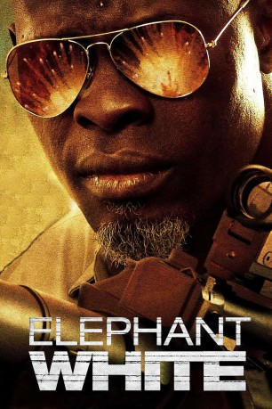
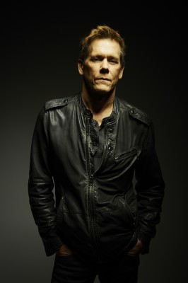
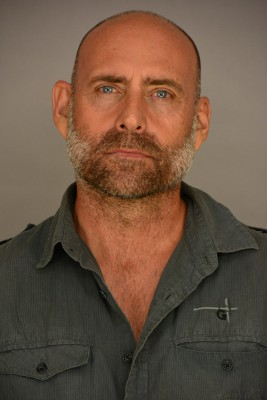

#6226 Elephant White - Ein Killer in Bangkok
Alternativ: Elephant White
 
 IMDB-Wertung: 5.1 / 10
IMDB-Wertung: 5.1 / 10  Metascore: 0
Metascore: 0 
Der Auftragskiller Curtie Church (Djimon Hounsou) wurde von mysteriösen Hintermännern angeheuert mit verbrecherischen Menschenhändlern in Bangkok aufzuräumen. Nachdem er eine Gruppe von Bösewichte auseinandergenommen hat, sieht er die schöne Mae (Jirantanin Pitakporntrakul), die ihn beobachtet. Nachdem er sich bei seinem alten Kumpel Jimmy (Kevin Bacon) mit neuen Waffen versorgt hat, nimmt Church den Kampf gegen die Menschenhändler-Gangs wieder auf und spielt sie in bester „Yojimbo“-Manier gegeneinander aus. Doch natürlich lassen sich die Bösewichte nicht einfach abschlachten und schlagen zurück. Church muss sich bald immer mehr Feinden erwehren, zudem herausfinden, wer ihn angeheuert hat und warum und wer die mysteriöse Mae ist, die immer wieder seinen Weg kreuzt.
Jahr: 2011
Dauer: 91 Minuten
FSK: 18
Land: USA Studio: Millennium EntertainmentTonspuren: DTS - ,
Untertitel: Deutsch, Englisch,
Auflösung: 1080p (1920x824) Größe: 5038 MB
Genre: Action, Thriller, Fantasy, Krimi
Regisseur: Prachya Pinkaew
Drehbuch: Andrew Klavan
Soundtrack:
Darsteller:
 Djimon Hounsou als Curtie Church
Djimon Hounsou als Curtie Church-  Kevin Bacon als Jimmy
- Sahajak Boonthanakit als Rajahdon
-  Gigi Velicitat als The Drunk Man
- Creighton Mark Johnson als Lead Gunman Bodyguard , uncredited
- Markus Waldow als The Man with the Stopwatch
- Jirantanin Pitakporntrakul als Mae
- Weeraprawat Wongpuapan als Boss Katha
- Apichart Chusakul als Advisor Bhun
- Suteerush Channukool als Number Two
- David Firestar als Civilian Fleeing Explosion , uncredited
- Desmond O'Neill als Bodyguard , uncredited
Datei: X:\FSK18-2011\Elephant White - Ein Killer in Bangkok (2011, FSK18, 1920x824).mkv seit 17.05.2017
Festplatte: FSK18
 Es gibt insgesamt 30 Filme in der Gruppe 'FSK18-2011'
Es gibt insgesamt 30 Filme in der Gruppe 'FSK18-2011'